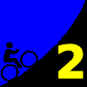
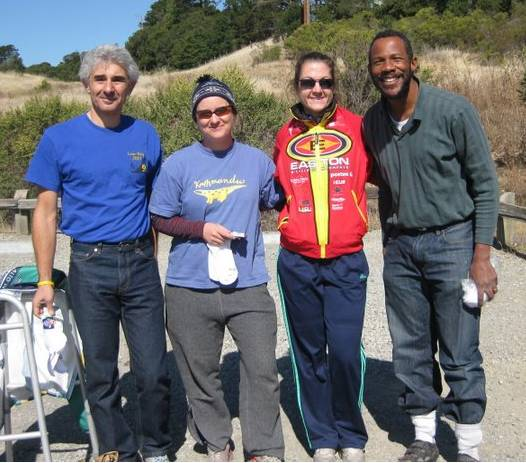

|  |
2008 Low-Key Hillclimbs Week 2 Results: West Alpine 11 Oct 2008 |
|  |
| Some week 2 volunteers: Barry, Penny, Lucia, and James. (Christine Holmes) |
Gorgeous weather greeted the Low-Keyers for our week 2 assault of West Alpine Road, an all-time Low-Key first. The slight chill in Sam McDonald park was soon forgotten as coordinator James Porter gave the signal for the climb to begin. Timing was from the beginning of the climb at Pescadero Road, as opposed to the brudge marking the beginning of the steeper portion. This early section of gradual grades was fast, with pulling the lead group, notable for its absence of eventual second-place . As the serious climbing began, Tim dropped the others for what was to become a solo victory. Michael, on the other hand, managed to catch the chase group, then drop them at the summit for an impressive second place. In the women's competition, managed to overtake Montebello's leader for a narrow first place. Thanks to coordinator James Porter, with help from Brenda Brunner, Barry Burr, Richard Contreras, Penny Hutchinson, Aleks Kojic, and Lucia Mokres for making today's climb possible!
median time = 37:13
pl # rider team category time mph fph score 1 210 Tim Clark Red Octane 35+ 29:47 15.11 4009 124.96 2 248 Michael Grundmann Webcor/Alto Velo 3 30:30 14.75 3915 122.02 3 54 Justin Lucke Google Vegan 30:39 14.68 3896 121.42 4 352 Geoff Drake Bike Trip 45+ 30:40 14.67 3893 121.36 5 217 Thomas Novikoff Cambio 2 30:41 14.67 3891 121.29 6 282 Ammon Skidmore Roaring Mouse 30+ 31:14 14.41 3823 119.16 7 1 Dan Connelly Low-Key 3 31:44 14.18 3763 117.28 8 17 Brian Edwards Hell Riders 25-29 31:58 14.08 3735 116.42 9 458 Craig Sanders X Men 40+ 32:02 14.05 3727 116.18 10 500 Mike Donahue 40+ 32:04 14.03 3723 116.06 11 328 Mark Edwards Bike Trip 45+ 32:15 13.95 3702 115.40 12 627 Josh Lubransa No Form 32:41 13.77 3653 113.87 13 603 Mike Attie Bi-Pedal 32:42 13.76 3651 113.81 14 213 Tom Gardin 35+ 32:52 13.69 3633 113.24 15 487 Nicholas Webb 33:02 13.62 3615 112.66 16 278 Chris Heisterkamp Google Male 33:15 13.53 3591 111.93 17 37 Bill Lloyd Six Fifty 1 33:20 13.50 3582 111.65 18 322 Christopher Bosch Google 33:22 13.49 3578 111.54 19 585 Michael Barnes 33:25 13.47 3573 111.37 20 142 Rich Hill LGBRC 40+ 33:30 13.43 3564 111.09 21 506 Nils Tikkanen Bike Trip 3 34:10 13.17 3495 108.93 22 633 Paul Barclay Swarm 34:15 13.14 3486 108.66 23 523 Jamie Willin Olympic Club 34:53 12.90 3423 106.69 24 35 Ron Brunner Low-Key Commuter 34:53 12.90 3423 106.69 25 479 Jeromy Cottell Pen Velo/Kondra 34:53 12.90 3423 106.69 26 532 Ben Stern Roaring Mouse Fixed Gear 34:56 12.88 3418 106.54 27 556 Alon Golan Webook.com 4 34:57 12.88 3416 106.49 28 250 Ian Sowden 35:05 12.83 3403 106.08 29 453 Doug Aldrich San Jose Bike Club 35:10 12.80 3395 105.83 30 307 Christian Paquet Doogie 50+ 35:23 12.72 3374 105.18 31 518 Carmelo Rios Fighting Bobas 5 35:50 12.56 3332 103.86 32 415 Sam Beal Chain Reaction 36:09 12.45 3303 102.95 33 441 Ilyas Elkin Nvidia 25-29 36:14 12.42 3295 102.71 34 452 Bruce Gardner Monta Vista Velo 35+ 36:15 12.41 3294 102.67 35 507 Krishna Dole 30+ 36:23 12.37 3282 102.29 36 349 Dennis Pedersen Bike Trip 45+ 37:12 12.10 3210 100.04 37 323 Scott Martin Bike Trip 50+ 37:13 12.09 3208 100.00 38 462 Dirk Rohloff Fighting Bobas 37:27 12.02 3188 99.38 39 609 Franz Kelsch Utah Velo 60+ 37:47 11.91 3160 98.50 40 277 DJ Novotney 30+ 37:59 11.85 3143 97.98 41 497 Adam Brinkman 38:02 11.83 3139 97.85 42 579 Jonathan Walden 38:13 11.77 3124 97.38 43 273 Calvin Do Skinny slow guys 35+ 38:17 11.75 3119 97.21 44 325 Kevin Fetterman Sunburnt DJ 38:22 11.73 3112 97.00 45 454 Bob Montague Bike Trip 45+ 38:28 11.70 3104 96.75 46 140 Gary Griffin Bike Trip 55+ 38:29 11.69 3103 96.71 47 412 John Pollard Bike Trip 45+ 38:35 11.66 3095 96.46 48 480 Arley Lewis Field of Rabbits 38:40 11.64 3088 96.25 49 550 Mike Bradley Fozz 40+ 39:30 11.39 3023 94.22 50 236 Paul Melville Doogie 55+ 39:48 11.31 3000 93.51 51 64 Keith Devlin Western Wheelers 60+ 39:55 11.27 2991 93.24 52 384 Dan Rohrer Leafy Joe 40:06 11.22 2978 92.81 53 272 Martin Hampton Pen Velo/Kondra 40:41 11.06 2935 91.48 54 337 Bruce Swanson Leafy Joe 45+ 41:21 10.88 2888 90.00 55 110 Edward Miller SLACer 65+ 41:23 10.87 2885 89.93 56 469 Mat Davidson RoadBikeReview 42:12 10.66 2829 88.19 57 372 Ryan P.C. Gibson Google 42:17 10.64 2824 88.02 58 591 Neal Herman Team Spike 43:02 10.46 2775 86.48 59 505 Christopher Olson Google 43:43 10.29 2731 85.13 60 561 Todd Murphy 43:50 10.27 2724 84.90 61 351 Jeff Swan Team Spike 44:21 10.15 2692 83.92 62 336 Ed Noskowski Leafy Joe 45+ 45:22 9.92 2632 82.04 63 442 Hal Ramsey 45:53 9.81 2602 81.11 64 48 David Kelly Team Kelly 30+ 46:59 9.58 2541 79.21T 65 615 Bob Corman Team Spike 47:25 9.49 2518 78.49 66 418 Artem Teachenko Pen Velo/Kondra 47:40 9.44 2505 78.08 67 478 Patrick Callahan Western Wheelers 35+ 47:50 9.41 2496 77.80 68 621 Paul Woodard Team Spike 47:52 9.40 2494 77.75 69 448 Tim Sutton Plus 3 Network Mountain Bike 48:19 9.31 2471 77.03 70 808 Allen Erkman Team Scooby Single Speed 49:05 9.17 2433 75.82 71 79 Steve Nash Unicycle 49:33 9.08 2410 75.11U 72 484 Wolfgang Timm Western Wheelers 40+ 49:34 9.08 2409 75.08 73 455 Erik Strom Mud 'n' Crud 52:12 8.62 2287 71.30 74 573 Tom Everman Google 60:37 7.42 1970 61.40 T : tandem score U : unicycle
median time = 47:46
pl # rider team category time mph fph score 1 533 Beverly Chaney Roaring Mouse 38:01 11.84 3141 125.65 2 494 Susan Dahm 38:03 11.83 3138 125.54 3 445 Mei Xi Mud 'n' Crud 40:45 11.04 2930 117.22 4 5 Ingrid Erkman Team Scooby Single Speed 44:27 10.12 2686 107.46 5 256 Alison Chaiken Sisters of No Mercy 40+ 45:30 9.89 2624 104.98 6 597 Sarah Charlesworth Bi-Pedal 46:36 9.66 2562 102.50 7 639 Signe Bray Swarm 46:37 9.65 2561 102.47 8 554 Alissa Murphy 47:00 9.57 2540 101.63 9 438 Helen Moore Western Wheelers 40+ 47:07 9.55 2534 101.38 10 305 Anne Findlay Triabetes/Pacific Bikes 30+ 48:25 9.29 2466 98.66 11 460 Katia Shukh Nvidia No Idea 50:30 8.91 2364 94.59 12 515 Melissa Griffiths 50:35 8.90 2360 94.43 13 420 Janet LaFleur Road Divas Back Of The Pack 52:40 8.54 2267 90.70 14 489 Tamara Cracknell Google 30+ 56:55 7.91 2098 83.92 15 27 Christine Holmes Low-Key 40+ 59:25 7.57 2010 80.39 16 111 Pat Parseghian Google 50+ 59:50 7.52 1996 79.83 17 414 Louisa Kelly Team Kelly U5 46:59 9.58 2541 79.21T 18 106 Angela Liu Velo Girls 60:57 7.38 1959 78.37 19 246 Amy Tam Road Divas 67:50 6.63 1760 70.42 T : tandem score
pl team score scoring 1 Roaring Mouse 351.34 (Beverly Chaney, Ammon Skidmore, Ben Stern) 2 Bike Trip 345.69 (Geoff Drake, Mark Edwards, Nils Tikkanen) 3 Google 344.89 (Justin Lucke, Chris Heisterkamp, Christopher Bosch) 4 Low-Key 304.36 (Dan Connelly, Ron Brunner, Christine Holmes) 5 Pen Velo/Kondra 276.24 (Jeromy Cottell, Martin Hampton, Artem Teachenko) 6 Western Wheelers 272.42 (Helen Moore, Keith Devlin, Patrick Callahan) 7 Leafy Joe 264.85 (Dan Rohrer, Bruce Swanson, Ed Noskowski) 8 Team Spike 248.89 (Neal Herman, Jeff Swan, Bob Corman) 9 Bi-Pedal 216.32 (Mike Attie, Sarah Charlesworth) 10 Swarm 211.13 (Paul Barclay, Signe Bray) 11 Fighting Bobas 203.24 (Carmelo Rios, Dirk Rohloff) 12 Doogie 198.69 (Christian Paquet, Paul Melville) 13 Nvidia 197.30 (Ilyas Elkin, Katia Shukh) 14 Mud 'n' Crud 188.52 (Mei Xi, Erik Strom) 15 Team Scooby 183.28 (Ingrid Erkman, Allen Erkman) 16 Road Divas 161.11 (Janet LaFleur, Amy Tam) 17 Team Kelly 158.42 (David Kelly, Louisa Kelly) 18 Red Octane 124.96 (Tim Clark) 19 Webcor/Alto Velo 122.02 (Michael Grundmann) 20 Cambio 121.29 (Thomas Novikoff) 21 Hell Riders 116.42 (Brian Edwards) 22 X Men 116.18 (Craig Sanders) 23 No Form 113.87 (Josh Lubransa) 24 Six Fifty 111.65 (Bill Lloyd) 25 LGBRC 111.09 (Rich Hill) 26 Olympic Club 106.69 (Jamie Willin) 27 Webook.com 106.49 (Alon Golan) 28 San Jose Bike Club 105.83 (Doug Aldrich) 29 Sisters of No Mercy 104.98 (Alison Chaiken) 30 Chain Reaction 102.95 (Sam Beal) 31 Monta Vista Velo 102.67 (Bruce Gardner) 32 Triabetes/Pacific Bikes 98.66 (Anne Findlay) 33 Utah Velo 98.50 (Franz Kelsch) 34 Skinny slow guys 97.21 (Calvin Do) 35 Field of Rabbits 96.25 (Arley Lewis) 36 Fozz 94.22 (Mike Bradley) 37 SLACer 89.93 (Edward Miller) 38 RoadBikeReview 88.19 (Mat Davidson) 39 Velo Girls 78.37 (Angela Liu) 40 Plus 3 Network 77.03 (Tim Sutton)